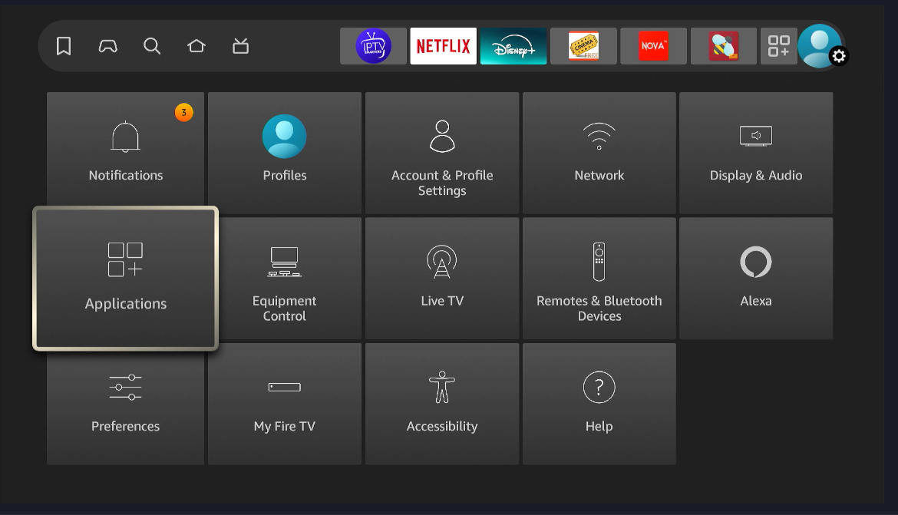
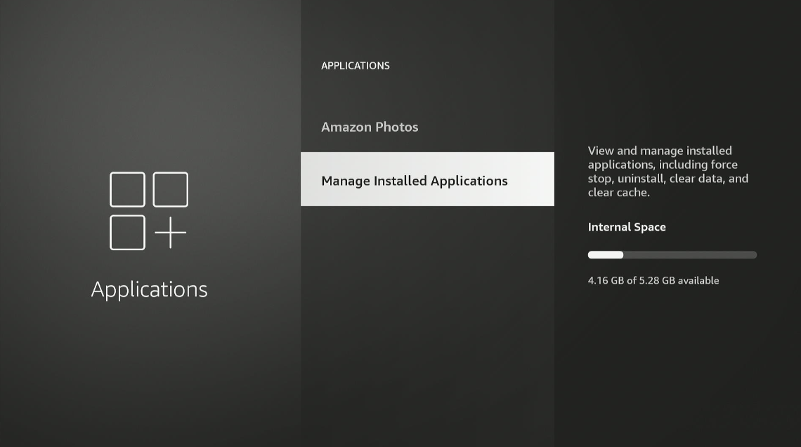
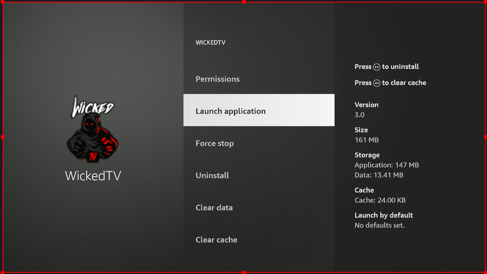

Find and Move App
Move both the Wicked and Tivimate App. Try them both out. Same content different user interface.
If app is not in the list try instructions below
1. Under settings click Applications

2. Click Managed installed apps

3. Scroll down to wicked app and click on it then launch application. It should up in the list after that eventually
